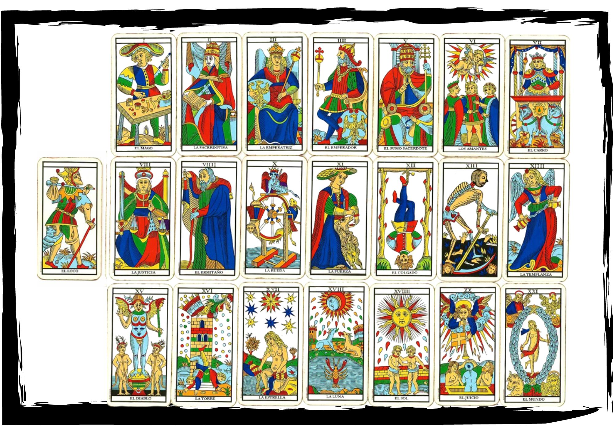
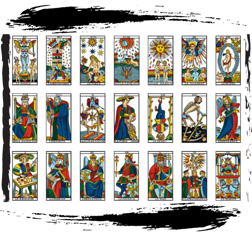

Al tarot lo vamos a comprender como un mándala completo, un solo dibujo y el primer ejercicio práctico es tomarse el tiempo para observarlo detenidamente en su completitud

En la sección de collage, sacamos a cada arcano de su contexto,
[intenta hacer un collage por día en el estudio de esta práctica]
Realiza el pago por paypal o contactame para realizarlo y acceder al curso completo online-personalizado.